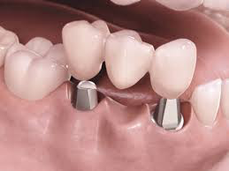
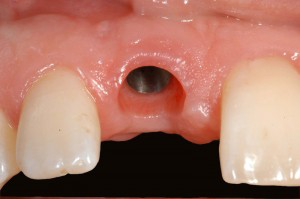
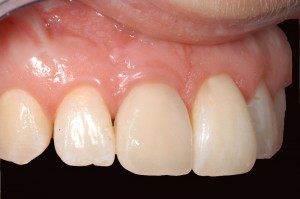

Det er mulig å erstatte nesten alle tapte tenner med implantat.
Behandlingen innebærer at man opererer en liten skrue i titan inn i kjevebenet. Denne erstatter roten som mangler. På implantatet festes siden en krone eller en bro.
Tannerstatning på implantater er en gjennomprøvd behandlingsmetode med en klinisk dokumentasjon som strekker seg over 40 år tilbake i tid. I nesten alle tilfeller går det an å få tenner som sitter fast og som ser naturlige ut med denne behandlingen.
Grunnstoffet titan(Ti) godtas av kroppen nesten som om det var dens eget vev, og dette gjør at pasienten kan få nye røtter fremstilt i titan. Med en liten operasjon vil tannlegen feste titanskruer, eller implantater som er fagbetegnelsen, i kjeven. Disse titanimplantatene vokser fast i kjevebenet. På implantatet festes siden en liten mellomdel kalt distanse, som stikker så vidt gjennom tannkjøttet. En krone eller bro skrues deretter fast på distansen.
Før implantatbehandlingen settes i gang kreves grundig forundersøkelse og nøye planlegging. Behandlingen strekker seg som regel over flere uker og krever flere tannlegebesøk. Tannlegen vil lage et kostnadsoverslag og en behandlingsplan i samarbeid med oralkirurg og tanntekniker. Det er viktig med røntgenbilder for å se på høyden og kvaliteten av kjevekammen. I tillegg trenger man oppdaterte helseopplysninger, fordi munnhulen må være fri for infeksjoner og tannløsningssykdom (periodontitt).
 
Når behandlingen utføres er det viktig at pasienten er frisk, men også pasienter med kroniske sykdommer under medisinsk behandling kan få utført implantatbehandling. En frisk munnhule hvor tannkjøttproblemer, kariesangrep og andre infeksjoner er under kontroll er viktig for et stabilt og godt langtids resultat. Høy alder er sjelden et problem. Røyking frarådes ved implantatbehandling, da det er større fare for komplikasjoner med bentap.
Implantatbehandling kan benyttes hvis du:
- mangler èn tann. Man opererer inn et implantat og fester en krone på implantatet. Dette anbefales særlig der nabotenner er feilfrie eller har små fyllinger.
- mangler flere tenner. Man opererer inn to eller flere implantater og fester enten flere kroner eller en keramisk bro på disse.
- mangler alle tennene i kjeven. Implantatene vil da fungere som feste for en avtagbar helprotese eller for en større keramisk bro.
I underkjeven er det spesielt vanskelig å få en helprotese til å sitte fast, og hvis så er tilfelle, kan man få satt inn 2 implantater og laget en dekkprotese/avtagbar protese på trygdens regning.
Vi benytter oss av de mest anerkjente merkene: Straumann, Nobel Biocare, Dentsply implants og Biomet 3i.